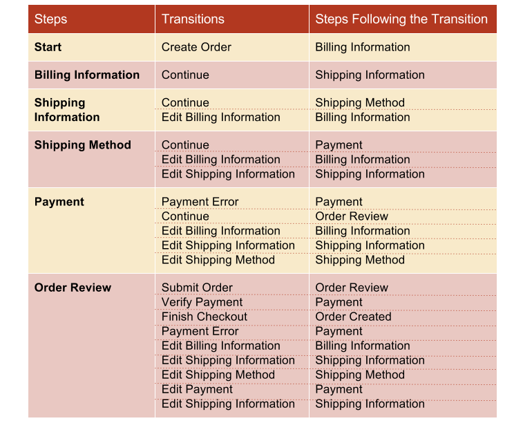
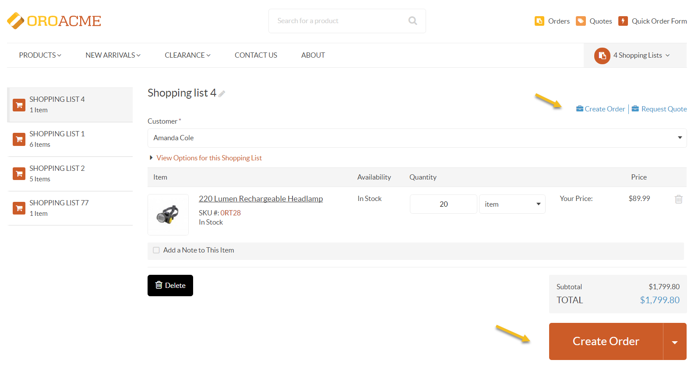
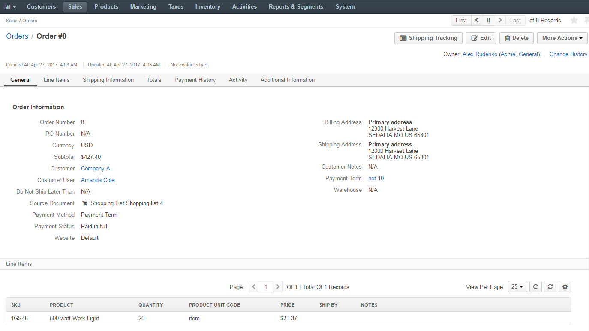

Checkout Workflow¶
Overview¶
The Checkout workflow represents a standard checkout procedure in the eCommerce environment. It is a system workflow that defines the sequence of steps and transitions that a user can go through when creating an order in the storefront.
To reach the workflow:
- Navigate to System > Workflows in the main menu.
- Click Checkout to open the flow.
On the Checkout workflow page, you can perform the following actions:
- Deactivate the workflow - click Deactivate to deactivate the workflow.
- Activate the workflow - click Activate to activate the workflow.
Within the Workflows grid, you can perform the following actions for the Checkout workflow:
- View the workflow:
- Deactivate / Activate the workflow: /

Steps and Transitions¶
The following table illustrates the steps and transitions that the Checkout workflow consists of:
As an illustration, let us go through a sample flow to see how the Checkout workflow works:
A product has been added to a shopping list. On opening the shopping list, you can create an order either by clicking Create Order on the right of the page next to Request Quote or by clicking on the Create Order button at the bottom of the page.
Note
The Create Order button will only be available if the following conditions are met:
- at least one shipping method is available
- at least one payment method is available
- there is at least one product with a price in the shopping list
- items to be purchased are available in the inventory in the management console
A warning message will be shown if for some reason you are unable to start the checkout process.
Step 1: Billing Information
The order is open. The first step is to enter billing information for the order by selecting an existing address from the address book, or creating a new one.
Checking Ship to this address will allow you to use the provided billing address as shipping.
Clicking Continue will redirect you to the next step.
Note
It is possible to amend the order by clicking Edit Order in the right corner of the Order Summary section. The Order Summary section will be available for Billing Information, Shipping Information, Shipping Method and Payment pages. Editing the order will remain possible throughout the checkout process until the order is submitted.

Step 2: Shipping Information
If the Ship to this address box has been checked in the Billing Information step, the provided address will be automatically selected in the Shipping Information step.
To edit shipping information, clear the Use billing address box and provide a different shipping address for the order.

Note
It is possible to edit the already provided information (until the order is submitted) by clicking on the left side of the page.

Step 3: Shipping Method
At this stage, it is necessary to provide a shipping method by selecting one from the list of the available methods.

Step 4: Payment
Choose a suitable payment method by selecting it from the list of all available methods.

Step 5: Order Review
Once all the necessary information has been provided, it is possible to review the order in the Order Review section:
- View Options for the order:
- Do not ship later than
- PO Number
- Notes
- Delete the shopping list
- Check quantity, price, subtotal, shipping and total cost
- Edit the Order
- Edit the already provided information by clicking on the left side of the page
To submit the order, click Submit Order at the bottom of the page.

- View Options for the order:
Once submitted, the order will be received and dealt with by the sales team.
